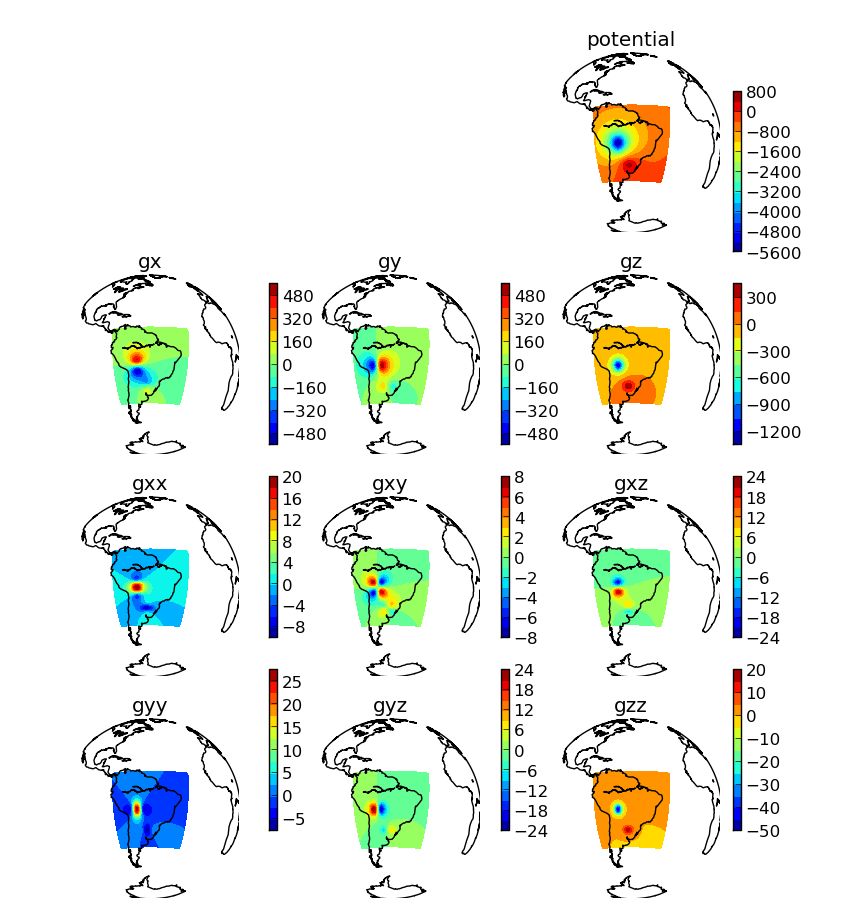
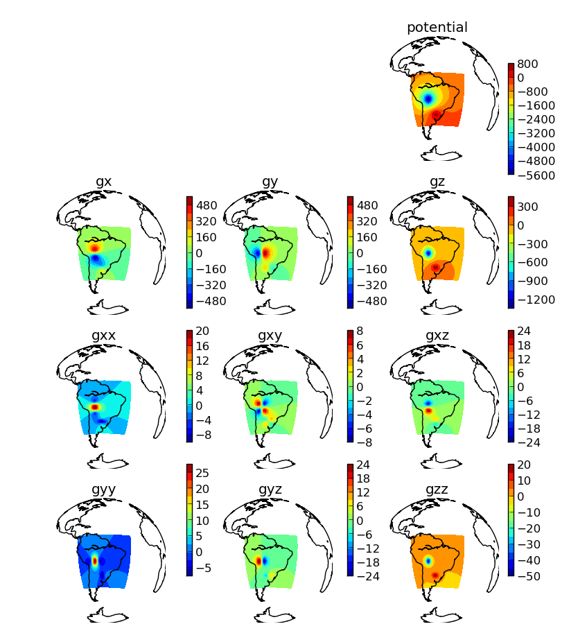

One of the open-source software projects I have been working on is called Tesseroids.
It is a collection of C programs that calculate the gravitational fields (e.g., gravitational potential, gravity anomaly, gradient tensor) of a tesseroid. This is all done in spherical coordinates and can be used to model large regions where one would like to take the Earth's curvature into consideration.

I'm proud of this software because it was my first real programming project. I've been working on it since my undergrad years and it has gone through several refactorings. The main problem with it, though, is that it is written in C. So it is very time consuming and tedious to add new features to it. One of the things that has been on my TODO list for quite some time is exporting to VTK. This would enable 3D plotting with Paraview or Mayavi. Another is adding parallel computations, which would be a pain to do in a portable way in C. But I never got around to actually start any of this. Specially with my PhD in the way and the much more pleasent experience of programming in Python on Fatiando a Terra.
So last week I finally got around to implementing tesseroid calculations and 3D plotting on Fatiando! You can check out the source code on the devel branch on GitHub. Here is a little taste of a 2 tesseroid model and the resulting gravitational fields:
 
There are 2 scripts on the cookbook that demonstrate the usage. One even shows how to split a large model and calculate in parallel using the multiprocessing package.
This script generates a 40000 tesseroid model of the crust, plots it in Mayavi, calculates the gravity anomaly and plots that using a orthographic projection (using the matplotlib Basemap toolkit).
It's that easy!
---
My first paper, "Robust 3D gravity gradient inversion by planting anomalous densities", was finally published in the journal Geophysics! There is a copy available in my Mendeley profile.
It was an arduous review, with a complete rewrite of the methodology and source code, but it was well worth it. The end result looks much better and (in my opinion) is more readable. This is the result of my Master's dissertation at the Observatório Nacional in Brazil, where I'm currently doing my PhD. The title may sound funny (even for geophysicists) and that is a good thing because it was our intention! It is a pun on the method because we use elements called "seeds" (this one is not by us) that grow into the final solution (an anomalous density).
Go see an animation of the inversion process on figshare because it explains the idea of the method much better than words!
This paper is about a method that me and my supervisor developed for 3D geophysical inversion. Geophysical inversion is basically an estimation problem. We try to estimate the physical properties (density, shape, etc) of a geologic structure based on measured data (like the gravity field perturbation of the structure). This is problematic because it is an ill-posed problem, which means that there are an infinite number of solutions (non-unique) and, if there is a solution, it is unstable (very sensitive to noise in the data). The good about this is that it keeps me "employed" (as much as grad student can be)! The trick, then, is introducing more information into the inversion, be it geometric, geologic, or merely mathematical. So that is what we did, in a heuristic sort of way. Plus, we used a smart algorithm to save a lot of computation time and memory.
As is always the case in methodology research, I had to implement the software for doing all this. At the time I started this project (around October 2010) I was already working on an early version of Fatiando a Terra. So naturally, I forked the Fatiando repository on Bitbucket and started implementing the inversion algorithm as module (called harvester) of the fatiando package. The good thing about this is that every time I need some functionality, I would go and implement it on Fatiando and pull the changes back. So the Fatiando project grew a lot during this time and became much more useful. I also saw a lot of design flaws, which I later resolved, when I was making the scripts to obtain the results in the paper. Now that the paper is out, I've merged the changes back into Fatiando and they will be out soon in the v0.1 release! There is also a command line program that runs the inversion, if you don't want to get your hands dirty with Python scripts. If you're curious, you can check out the development source and also browse the documentation.
During the writing process, we had a lot of complaints that the paper was too big (it really was). So I decided to finally start using figshare and uploaded the figures and sections that I had to remove as supplementary material and also an animation! There is also a poster there that about this that I presented at the 2011 EAGE meeting in Vienna. So many thanks to the figshare team (specially Mark Hahnel) for providing this great service that certainly made this paper better!
---For a while now we've been thinking of opening up the fatiando.org domain to more than just the Python package fatiando.The idea was to include some other open-source content, like other software for geophysics, lecture notes, slides, etc. All free and open source!
Last week, I decided to take the time to make these changes. I've made a lot of changes to the site (including a trying out a new Wordpress theme) to make it fit this new direction to the Fatiando a Terra project. We'll try to make the blog a place for discussion about new publications, crazy ideas, and the like. I'll be taking some baby steps toward this goal and see how things go from there.
I included under the Fatiando umbrella my other open-source project Tesseroids, a software package for gravity modeling in spherical coordinates! The programs are command line and written in C. There is documentation (on ReadTheDocs) complete with instructions, theory, and even a cookbook! Version 1.1 of Tesseroids will be out soon and I'm working on a paper describing the software and some new things we've discovered using it. There will be a blog post about this once the paper is out (I promise)!
Our megalomaniac goal is still to model the whole Earth, but now the site might be useful to more people. Check it out and let us know what you think!
---Contents © 2013 Leonardo Uieda - Powered by Nikola
Except where otherwise noted, all content is avilable under a CC-BY license.